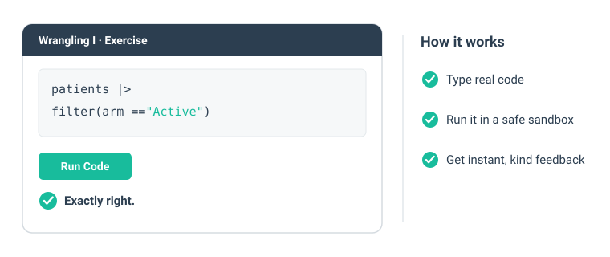

R for Clinical Statistics is a gentle, hands-on course for clinicians and clinical researchers. You write real code against real-feeling clinical data from the first lesson, and every step gives you instant, kind feedback. No prior programming needed.

Why this course
The idea is simple: do something real in R within minutes, then build from there. Three promises hold in every lesson:
- You cannot break anything. Each exercise is a safe sandbox. Run it, get it wrong, run it again.
- Red text is not failure. An error is R asking for a small change, nothing more.
- You are never stuck. A hint and a full solution sit one click away.
What you will be able to do
By the end of the core lessons you can take a clinical dataset and:
- pick the rows and columns you want, count groups, and sort (
filter,select,count,arrange) - build new columns and summarise by treatment group (
mutate,group_by,summarise) - reshape between long and wide, and join tables together (
pivot_wider,left_join)
These are the moves behind most of the tables you see in a clinical paper.
The lessons
The course is a set of interactive tutorials you run on your own computer:
- 0 · Why R for clinical data — what a script buys you, and your first line of R.
- 1 · Tidy data as design — the one idea about table shape that makes everything else easy.
- 2 · The building blocks of R — objects, value types, and what a data frame is.
-
3 · Wrangling I —
filter,count,arrange,select, and the pipe. -
4 · Wrangling II —
mutate, and grouped summaries. - 5 · Tidy data in practice — reshaping and joining repeated measurements.
Each interactive lesson ends with open practice exercises, graded as you go.
Get started in three steps
- Install R and RStudio, both free.
- Install the course package.
- Run
learn()and pick a lesson.
The Get started guide walks through each step with the exact commands. In a hurry? Try R in your browser first, with nothing to install.